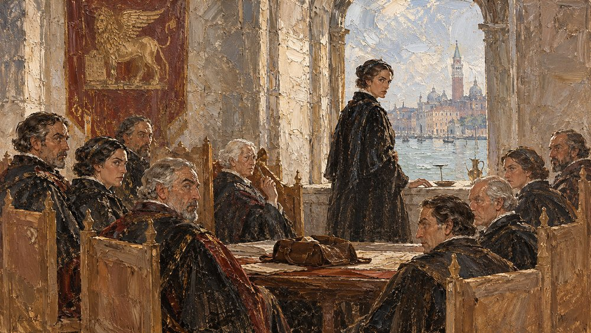

Record 11 of 15
A very fine thing to see
On the morning the Lamp-Host marches out, Domenica Ardizzon watches it from the tall window of the Chamber of Salt with her hands behind her back and a saucer of her own vinegar going cold on the sill, counting the lanterns, because it was what she did. The Council, Giustina Loredan, eighty, the oldest among its nine, has voted six to three to suspend the Reclamation. The youngest Tribune, at her elbow, calls it a very fine thing to see. “It is a very expensive one,” says Domenica.
A council chamber hung with a winged-lion banner: about ten councillors in black robes sit at a long table in carved chairs, turned to look at a woman who stands at the window with a hand on the sill; a leather satchel lies on the table, and a lagoon city with a campanile and domes shows beyond..